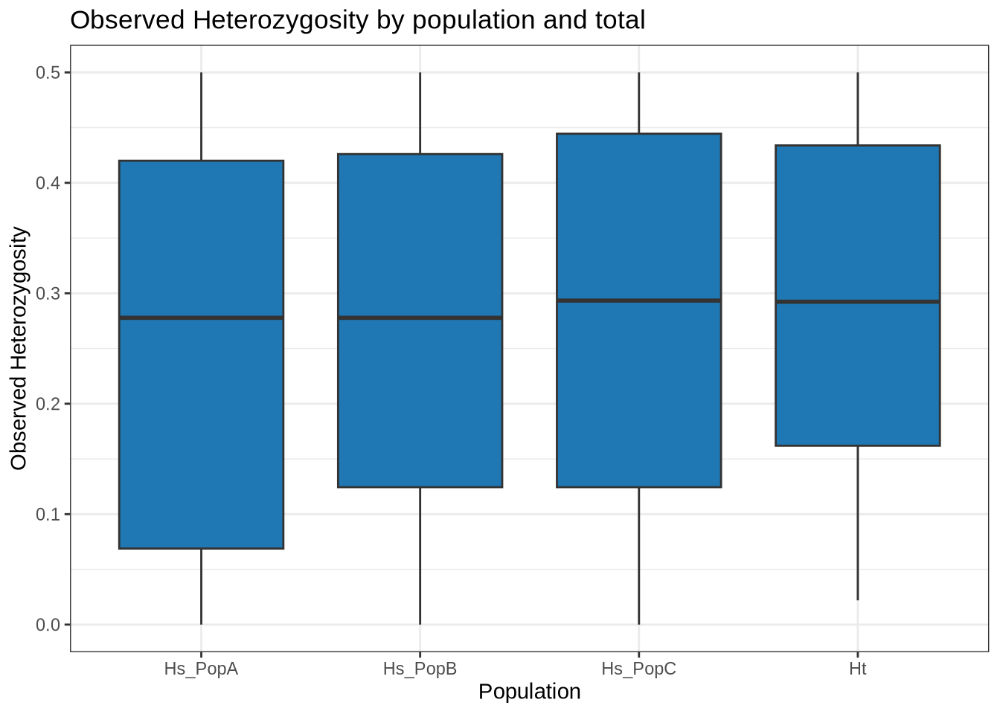
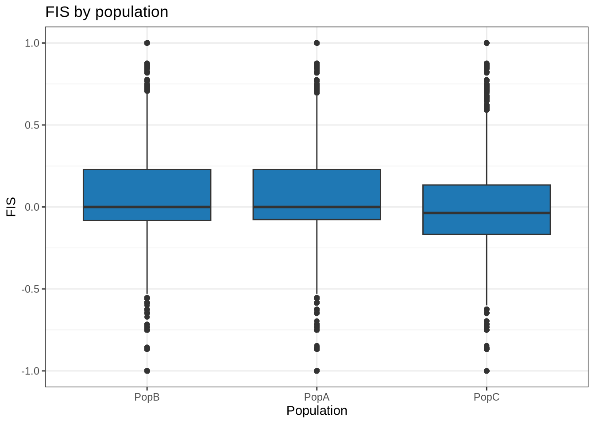

plink2 --bfile ../Example_Data/final --recode vcf id-paste=iid --out ../Processed_Data/array --allow-extra-chr --mind 0.1 --geno 0.05 --max-alleles 2 --min-alleles 2 --chr 1-10Working with SNP Data
Quick Filtering and Management of Array Data
This actually happens outside of R. A cool feature of RStudio
Filter by missing genotypes, missing individuals and create a VCF File
Here, we are using the program plink to convert the files we got from the genotyping service (final.ped, final.bed, final.fam). This command has several options:
--bfile ../Example_Data/final this is saying the input is a binary and ../Example_Data/final is a relative PATH to the data files. In the virtual machine, this could aslo be written as /home/eogwparticipant/NACE_MAS_Genomics_Workshop/Example_Data or ~/NACE_MAS_Genomics_Workshop/Example_Data
--recode vcf id-paste=iid is telling it to recode the file as a VCF file using the “individual id” from the .fam file as the individual label
--out array is telling it to name the output files with the prefix “array”
--allow-extra-chr is a Plink specific setting needed when you’re not working with human data
Important part
--mind 0.1 This is saying we only want individuals with less than 10% missing data
--geno 0.05 This is saying we only want SNPs with less than 5% missing data
--max-alleles 2 --min-alleles 2 This says we only want SNPs with two alleles
--chr 1-10 This says we only want nuclear SNPs. The array has other markser on it including mtDNA and pathogens, “chr 1-10” means only the SNPs on the 10 oyster genome chromosomes
It will help us to have both a .bed file and .vcf later one. The code below does the same as the above, but outputs a .bed file instead
plink2 --bfile ../Example_Data/final --make-bed --mind 0.1 --geno 0.05 --max-alleles 2 --min-alleles 2 --chr 1-10 --allow-extra-chr --out ../Processed_Data/arrayImport data into R
Now we’re ready to import that data into R for processing. We will first use the library vcfR to do this
library(vcfR)
***** *** vcfR *** *****
This is vcfR 1.15.0
browseVignettes('vcfR') # Documentation
citation('vcfR') # Citation
***** ***** ***** *****my_vcf <- read.vcfR("../Processed_Data/array.vcf")Scanning file to determine attributes.
File attributes:
meta lines: 15
header_line: 16
variant count: 60517
column count: 54
Meta line 15 read in.
All meta lines processed.
gt matrix initialized.
Character matrix gt created.
Character matrix gt rows: 60517
Character matrix gt cols: 54
skip: 0
nrows: 60517
row_num: 0
Processed variant 1000
Processed variant 2000
Processed variant 3000
Processed variant 4000
Processed variant 5000
Processed variant 6000
Processed variant 7000
Processed variant 8000
Processed variant 9000
Processed variant 10000
Processed variant 11000
Processed variant 12000
Processed variant 13000
Processed variant 14000
Processed variant 15000
Processed variant 16000
Processed variant 17000
Processed variant 18000
Processed variant 19000
Processed variant 20000
Processed variant 21000
Processed variant 22000
Processed variant 23000
Processed variant 24000
Processed variant 25000
Processed variant 26000
Processed variant 27000
Processed variant 28000
Processed variant 29000
Processed variant 30000
Processed variant 31000
Processed variant 32000
Processed variant 33000
Processed variant 34000
Processed variant 35000
Processed variant 36000
Processed variant 37000
Processed variant 38000
Processed variant 39000
Processed variant 40000
Processed variant 41000
Processed variant 42000
Processed variant 43000
Processed variant 44000
Processed variant 45000
Processed variant 46000
Processed variant 47000
Processed variant 48000
Processed variant 49000
Processed variant 50000
Processed variant 51000
Processed variant 52000
Processed variant 53000
Processed variant 54000
Processed variant 55000
Processed variant 56000
Processed variant 57000
Processed variant 58000
Processed variant 59000
Processed variant 60000
Processed variant: 60517
All variants processedAbove, we load the library and then use a function to read our vcf and store it as my_vcf
Calculating heterozygosity
.vcf and .bed files do not contain information about populations or localities. We need to tell our analyses which individuals below to which populations. To do this, one was is to use a simple text table. We can read the one I made for this data like so:
table <- read.table("../Example_Data/strata", header = TRUE)
head(table) Individual Population
1 B1 PopB
2 B2 PopB
3 B3 PopB
4 B4 PopB
5 B5 PopB
6 B6 PopBpoplist.names <- table$PopulationAs you can see our data has 45 individuals total, 15 in PopA, 15 in PopB, and 15 in PopC.
Next, the package vcfR can actually calculate heterozygosity for our data using the genetic_diff function
het_results <- genetic_diff(my_vcf, pop=as.factor(poplist.names), method= 'nei')
head(het_results) CHROM POS Hs_PopA Hs_PopB Hs_PopC Ht n_PopA n_PopB n_PopC
1 1 29363 0.27777778 0.37500000 0.2933673 0.3171985 30 28 28
2 1 30115 0.32000000 0.46444444 0.4800000 0.4367901 30 30 30
3 1 30567 0.23111111 0.32000000 0.3200000 0.2923457 30 30 30
4 1 32192 0.06444444 0.06444444 0.2311111 0.1244444 30 30 30
5 1 38807 0.23111111 0.19132653 0.1244444 0.1836260 30 28 30
6 1 44310 0.46444444 0.49777778 0.4200000 0.4701235 30 30 30
Gst Htmax Gstmax Gprimest
1 0.008484553 0.7709573 0.5920563 0.01433065
2 0.035048050 0.8071605 0.4778220 0.07334960
3 0.006756757 0.7634568 0.6196636 0.01090391
4 0.035714286 0.7066667 0.8301887 0.04301948
5 0.008371844 0.7270145 0.7495390 0.01116932
6 0.019957983 0.8202469 0.4382902 0.04553600You can see that this dataframe has the value calculated per SNP (each row). We can take a look at the columns that we are interested in and then take the mean values to get the mean genome-wide values
head(het_results[,3:6]) Hs_PopA Hs_PopB Hs_PopC Ht
1 0.27777778 0.37500000 0.2933673 0.3171985
2 0.32000000 0.46444444 0.4800000 0.4367901
3 0.23111111 0.32000000 0.3200000 0.2923457
4 0.06444444 0.06444444 0.2311111 0.1244444
5 0.23111111 0.19132653 0.1244444 0.1836260
6 0.46444444 0.49777778 0.4200000 0.4701235round(colMeans(het_results[,c(3:6)], na.rm = TRUE), digits = 3)Hs_PopA Hs_PopB Hs_PopC Ht
0.254 0.272 0.281 0.291 Hs_PopA is the observed heterozygostiy for PopA and so on. Ht is the observed across all individuals.
Plotting heterozygosity
I’m a fan of ggplot, but in order to use ggplot we need data in a “tidy” format. We can use the package reshape to do this for us
library(reshape2)
het_df <- melt(het_results[,c(3:6)], varnames=c('Index', 'Sample'), value.name = 'Heterozygosity', na.rm=TRUE)No id variables; using all as measure variableshead(het_df) variable Heterozygosity
1 Hs_PopA 0.27777778
2 Hs_PopA 0.32000000
3 Hs_PopA 0.23111111
4 Hs_PopA 0.06444444
5 Hs_PopA 0.23111111
6 Hs_PopA 0.46444444Now we can easily plot with ggplot. I’m going to use a simple box plot.
library(ggplot2)
p <- ggplot(het_df, aes(x=variable, y=Heterozygosity)) + geom_boxplot(fill="#1F78B4")
p <- p + xlab("Population")
p <- p + ylab("Observed Heterozygosity")
p <- p + theme_bw() + ggtitle("Observed Heterozygosity by population and total")
p
Calculating FIS (Inbreeding Coeffecient)
library(adegenet)Loading required package: ade4
/// adegenet 2.1.10 is loaded ////////////
> overview: '?adegenet'
> tutorials/doc/questions: 'adegenetWeb()'
> bug reports/feature requests: adegenetIssues()my_genind <- vcfR2genind(my_vcf)
strata<- read.table("../Example_Data/strata", header=TRUE)
strata_df <- data.frame(strata)
strata(my_genind) <- strata_df
setPop(my_genind) <- ~Populationlibrary(hierfstat)
Attaching package: 'hierfstat'The following objects are masked from 'package:adegenet':
Hs, read.fstatbasicstat <- basic.stats(my_genind, diploid = TRUE, digits = 3)summary(basicstat) Length Class Mode
n.ind.samp 181551 -none- numeric
pop.freq 60517 -none- list
Ho 181551 -none- numeric
Hs 181551 -none- numeric
Fis 181551 -none- numeric
perloc 10 data.frame list
overall 10 -none- numerichead(basicstat$Fis) PopB PopA PopC
AX.574114010 0.458 0.774 0.772
AX.564298109 0.030 0.200 0.200
AX.564298112 -0.217 -0.120 -0.217
AX.574114011 0.000 0.000 0.451
AX.563423214 -0.083 -0.120 -0.037
AX.575660822 -0.037 0.030 0.548fis_df <- melt(basicstat$Fis, varnames=c('Index', 'Sample'), value.name = 'FIS', na.rm=TRUE)p <- ggplot(fis_df, aes(x=Sample, y=FIS)) + geom_boxplot(fill="#1F78B4", notch= FALSE)
p <- p + xlab("Population")
p <- p + ylab("FIS")
p <- p + theme_bw() + ggtitle("FIS by population")
p